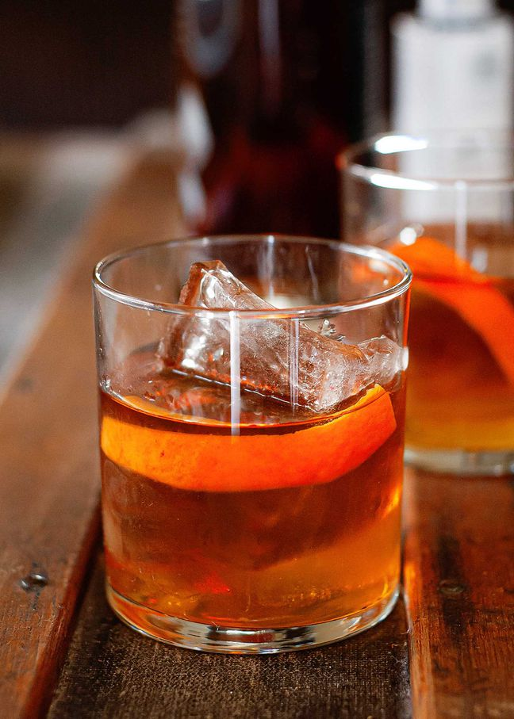

Old Fashion

Description
Ingredients
- Orange bitters
- Angostura bitters
- Bourbon of choice
- Simple syrup
- Luxardo cherry
- Orange
Steps
- 2 dashes each of orange bitters and Angostura bitters
- .5 - 1 ounce of simple syrup
- Stir, add ice
- Pour 2 ounces of bourbon, and stir
- Add orange peel, and luxardo cherry